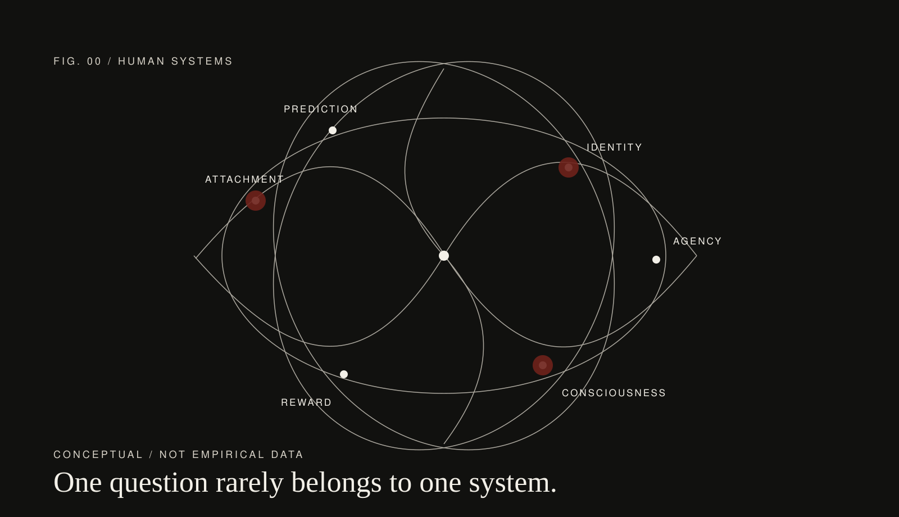

Journal × Magazine / Issue 001
The science
of being human.
Love, status, culture, attention, AI and consciousness—treated with the seriousness of a scientific journal and the visual confidence of an editorial magazine.
Five language editions · One connected knowledge system

Global Editions
Choose your edition.
No flags, no decorative map. The same human questions move across languages; the cultural framing changes with them.
Hover / focus to open an edition.
Language is treated as an editorial lens, not merely a translation setting.
Current Editorial Thesis
Different questions.
Shared mechanisms.
Shared mechanisms.
We use neuroscience, psychology, computation and culture as connected lenses—not separate silos. A question about fandom can lead to attachment, AI companionship and consciousness.
Enter the English edition →